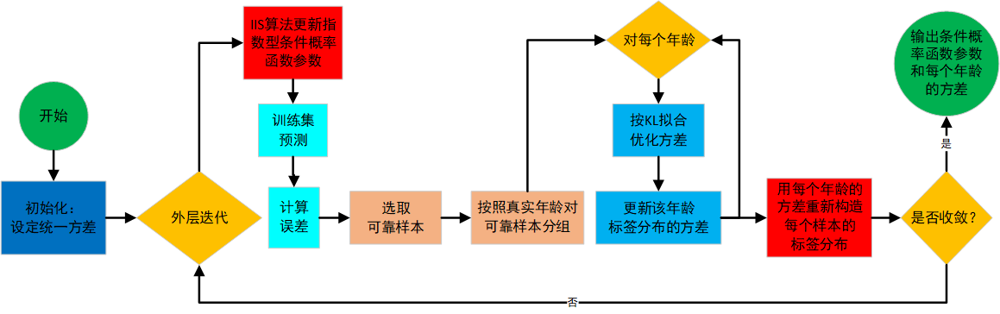

精读解析 | 从统一方差到分龄方差：自适应标签分布与联合优化
本文对 Xin Geng 等人的论文《Facial Age Estimation by Adaptive Label Distribution Learning》（2014 ）进行了精读，系统梳理方法框架，并给出关键数学推导。本文展示了自适应标签分布与分龄方差的定义与软标签构造的交替优化流程；拟牛顿法对更新条件概率函数参数的优化；以及实验设置与结论。
论文链接：Facial Age Estimation by Adaptive Label Distribution Learning
本文前置文章链接：精读解析|从单一标签到标签分布：面部年龄估计的新方法
人脸老化速度不恒定，儿童和老年变化快、青壮年变化慢，邻近年龄能“互借信息”的力度应随年龄段而变。固定方差的标签分布学习无法刻画这种差异，于是 ALDL 让每个年龄 \(a\) 从数据中自适应地学得其方差 \(σ_α\)：快段窄、慢段宽，软标签的扩散半径因龄而异，从而更精细地拟合年龄结构并提升整体与高龄稀疏段的预测表现。
自适应标签分布
传统标签分布学习为所有年龄使用同一方差，这与真实的老化节律不符：儿童与老年阶段外观变化更快，青壮年更平缓。于是同样的“邻近借用”强度不应一刀切。自适应标签分布（Adaptive Label Distribution）据此引入分龄方差：对每个年龄\(\alpha\)单独学习其标签分布宽度，使快速变化的年龄段分布更尖锐、缓慢变化的年龄段更平滑。令\(\mathcal{Y}=\{y_1,\dots,y_c\}\)，样本\(x\)的真实年龄为\(\alpha\)，以离散高斯刻画其软标签： \[ d_{y,x}(\sigma_\alpha)\;=\;\frac{\exp\!\big(-\tfrac{(y-\alpha)^2}{2\sigma_\alpha^2}\big)}{\sum_{y'\in\mathcal{Y}}\exp\!\big(-\tfrac{(y'-\alpha)^2}{2\sigma_\alpha^2}\big)}\,, \] 其中\(\sigma_\alpha\)是年龄\(\alpha\)的分布宽度（分龄方差）。
分龄方差估计与软标签重构
在建模策略上，整套方法以改进的交替迭代贯穿始终：一开始用统一初始方差\(\sigma_0\)把训练集从单标签转换为软标签，然后按 IIS 的方式更新条件概率参数\(\theta\)；接着用当前模型挑出可靠样本（例如其绝对误差\(e_i=\lvert \alpha_i-\hat\alpha_i\rvert\)不超过当轮训练\(\mathrm{MAE}\)），按真实年龄分组，仅用属于年龄\(\alpha\)的可靠样本来更新该年龄的方差\(\sigma_\alpha\)；如此“学\(\theta\)—调\(\sigma\)—重构软标签”往复进行，直至误差收敛。
为避免符号歧义，以下约定：\(p(y\mid x;\theta)\)指模型给出的条件分布，只依赖\(\theta\)；\(d_{y,\alpha}(\sigma)\)指以年龄\(\alpha\)为均值、标准差为\(\sigma\)的离散高斯模板在\(\mathcal{Y}\)上的归一化概率，满足\(\sum_{y\in\mathcal{Y}}d_{y,\alpha}(\sigma)=1\)，其显式形式为 \[ d_{y,\alpha}(\sigma)\;=\;\frac{\exp\!\big(-\tfrac{(y-\alpha)^2}{2\sigma^2}\big)}{\sum_{y'\in\mathcal{Y}}\exp\!\big(-\tfrac{(y'-\alpha)^2}{2\sigma^2}\big)}\,. \]
形式化地，给定第\(k\!-\!1\)轮的软标签\(D_i^{(k-1)}=\big(d_{y,x_i}^{(k-1)}\big)_{y\in\mathcal{Y}}\)，先做与普通标签分布学习一致的\(\theta\)更新： \[ \theta^{(k)} = \arg\max_{\theta}\sum_i \sum_{y\in\mathcal{Y}} d_{y,x_i}^{(k-1)} \log p(y\mid x_i;\theta) \]
\[ p(y\mid x;\theta) = \frac{\exp\!\Big(\sum_{r} \theta_{y,r}\,g_r(x)\Big)}{\sum_{y'}\exp\!\Big(\sum_{r} \theta_{y',r}\,g_r(x)\Big)} \]
其中 \(g_r(x)\) 表示样本 \(x\) 的第 \(r\) 个特征分量。
用\(\theta^{(k)}\)得到点预测\(\hat\alpha_i=\arg\max_y p(y\mid x_i;\theta^{(k)})\)并筛出可靠样本，然后对每个年龄\(\alpha\)在其可靠集合\(I_\alpha\)上，最小化模板高斯与模型分布的\(\mathrm{KL}\)以更新方差： \[ \sigma_\alpha^{(k)} \;=\; \arg\min_{\sigma>0}\;\sum_{m\in I_\alpha}\sum_{y\in\mathcal{Y}} d_{y,\alpha}(\sigma)\,\log\frac{d_{y,\alpha}(\sigma)}{\,p(y\mid x_m;\theta^{(k)})\,}. \]
对数障碍法把“\(\sigma>0\)”的约束纳入目标，得到仅定义在\(\sigma>0\)上的无约束问题。设 \[ F_\alpha(\sigma)\;=\;\sum_{m\in I_\alpha}\sum_{y\in\mathcal{Y}} d_{y,\alpha}(\sigma)\,\log\frac{d_{y,\alpha}(\sigma)}{\,p(y\mid x_m;\theta^{(k)})\,}, \] 则其对数障碍形式为 \[ \tilde F_{\alpha,\mu}(\sigma)\;=\;F_\alpha(\sigma)\;-\;\mu\,\log\sigma,\qquad \mu>0,\ \sigma>0, \] 并通过逐步减小\(\mu\)的方式逼近原问题的最优解。此时一维目标的导数与二阶导为 \[ \frac{\mathrm{d}\tilde F_{\alpha,\mu}}{\mathrm{d}\sigma} \;=\;\frac{\mathrm{d}F_\alpha}{\mathrm{d}\sigma}\;-\;\frac{\mu}{\sigma},\qquad \frac{\mathrm{d}^2\tilde F_{\alpha,\mu}}{\mathrm{d}\sigma^2} \;=\;\frac{\mathrm{d}^2F_\alpha}{\mathrm{d}\sigma^2}\;+\;\frac{\mu}{\sigma^2}. \]
为便于数值实现，把\(F_\alpha(\sigma)\)写成一维光滑目标，其一阶导可用\(q_y(\sigma)=d_{y,\alpha}(\sigma)\)与其对数导数给出： \[ \frac{\mathrm{d}F_\alpha}{\mathrm{d}\sigma} \;=\;\sum_{y\in\mathcal{Y}} \Big(\sum_{m\in I_\alpha}\big[\log q_y(\sigma)-\log p(y\mid x_m;\theta^{(k)})+1\big]\Big)\,\frac{\mathrm{d}q_y(\sigma)}{\mathrm{d}\sigma}, \] \[ \frac{\mathrm{d}q_y(\sigma)}{\mathrm{d}\sigma} \;=\;q_y(\sigma)\,\frac{(y-\alpha)^2-\mathbb{E}_{q(\sigma)}[(Y-\alpha)^2]}{\sigma^3},\qquad \mathbb{E}_{q(\sigma)}[(Y-\alpha)^2]=\sum_{y}q_y(\sigma)\,(y-\alpha)^2. \]
代入障碍项后，一维优化可采用牛顿法配合回溯线搜索求解\(\min_{\sigma>0}\tilde F_{\alpha,\mu}(\sigma)\)，以上一轮\(\sigma_\alpha^{(k-1)}\)为初值，内层收敛后减小\(\mu\)重复，直到外层停机条件满足。也可以使用拟牛顿方法或保序的区间缩小策略进行一维搜索。
更新得到\(\{\sigma_\alpha^{(k)}\}\)后，将其回填到所有样本以重构软标签 \[ d_{y,x_i}^{(k)}\;=\;\frac{\exp\!\big(-\tfrac{(y-\alpha_i)^2}{2(\sigma_{\alpha_i}^{(k)})^2}\big)}{\sum_{y'}\exp\!\big(-\tfrac{(y'-\alpha_i)^2}{2(\sigma_{\alpha_i}^{(k)})^2}\big)}\,, \] 并进入下一轮迭代；当相邻两轮的\(\mathrm{MAE}\)改善小于阈值\(\varepsilon\)时停止。这样，\(\theta\)的更新完全沿用普通标签分布学习的最大似然形式，而\(\sigma\)的更新则把“分龄应借多少邻近信息”交由数据自适应地决定。ALDL算法流程图如下所示。

拟牛顿驱动的参数学习
条件概率函数的训练目标保持不变，仍以最小化分布级负对数似然为准。其来源是将分布间的KL损失 \[ \min_{\theta}\ \sum_{i} \mathrm{KL}\!\left(D_i^{(k-1)}\ \Big\|\ p(\cdot\mid x_i;\theta)\right) \]
\[ \mathrm{KL}\!\left(D_i^{(k-1)}\ \Big\|\ p(\cdot\mid x_i;\theta)\right) =\sum_{j} d^{\,k-1}_{y_j,x_i}\,\log\frac{d^{\,k-1}_{y_j,x_i}}{\,p(y_j\mid x_i;\theta)\,} \]
其中 \(i\) 是样本索引；\(j\) 是标签索引；\(d^{\,k-1}_{y_j,x_i}\) 表示第 \(k\!-\!1\) 轮为样本 \(x_i\) 在标签 \(y_j\) 上的软标签权重；\(p(y_j\mid x_i;\theta)\) 是当前参数下模型对样本 \(x_i\) 属于标签 \(y_j\) 的预测概率。
改写为等价的加权交叉熵最小化：因为 \[ \sum_i \mathrm{KL}(D_i^{(k-1)}\|p_i)=\underbrace{\sum_{i,j} d^{\,k-1}_{y_j,x_i}\log d^{\,k-1}_{y_j,x_i}}_{\text{与 }\theta\text{ 无关}}\;-\;\sum_{i,j} d^{\,k-1}_{y_j,x_i}\,\log p(y_j\mid x_i;\theta), \] 去掉与\(\theta\)无关的常数项，得到负对数似然目标 \[ T(\theta)=\sum_{i}\log\!\sum_{j}\exp\!\Big(\sum_{r}\theta_{y_j,r}\,x_i^{(r)}\Big)\;-\;\sum_{i,j} d^{\,k-1}_{y_j,x_i}\,\sum_{r}\theta_{y_j,r}\,x_i^{(r)}, \] 其中 \[ p(y_j\mid x_i;\theta)=\frac{\exp\!\big(\sum_{r}\theta_{y_j,r}\,x_i^{(r)}\big)}{\sum_{j'}\exp\!\big(\sum_{r}\theta_{y_{j'},r}\,x_i^{(r)}\big)}\,. \] 其梯度为 \[ \frac{\partial T(\theta)}{\partial \theta_{y_j,r}} =\sum_{i}p(y_j\mid x_i;\theta)\,x_i^{(r)}-\sum_{i} d^{\,k-1}_{y_j,x_i}\,x_i^{(r)}. \]
拟牛顿迭代法按一般推导进行：对任意光滑目标\(f(\theta)\)，在当前点\(\theta_t\)作二阶泰勒近似 \[ f(\theta_t+\Delta)\approx f(\theta_t)+\nabla f(\theta_t)^\top\Delta+\tfrac12\,\Delta^\top H(\theta_t)\Delta, \] 其极小点满足牛顿方程 \[ H(\theta_t)\Delta_N=-\nabla f(\theta_t), \] 更新 \[ \theta_{t+1}=\theta_t+\alpha\,\Delta_N, \] 其中\(\alpha\)由一维线搜索选取以满足强Wolfe条件。由于直接构造并求解\(H^{-1}\)代价高，BFGS用对称正定矩阵\(B_t\approx H(\theta_t)^{-1}\)迭代逼近牛顿方向： \[ s_t=-B_t\,\nabla f(\theta_t),\qquad \theta_{t+1}=\theta_t+\alpha_t s_t, \] \[ y_t=\nabla f(\theta_{t+1})-\nabla f(\theta_t),\quad \rho_t=\frac{1}{y_t^\top s_t}, \] \[ B_{t+1}=(I-\rho_t s_t y_t^\top)B_t(I-\rho_t y_t s_t^\top)+\rho_t s_t s_t^\top, \] 并用满足 \[ f(\theta_t+\alpha_t s_t)\le f(\theta_t)+c_1\alpha_t\,\nabla f(\theta_t)^\top s_t,\qquad \big|\nabla f(\theta_t+\alpha_t s_t)^\top s_t\big|\le c_2\big|\nabla f(\theta_t)^\top s_t\big| \] 的\(\alpha_t\)（\(0<c_1<c_2<1\)）保证收敛效率与稳定性。
将上述一般过程套用于本文的\(T(\theta)\)：在外层交替的第\(k\)轮，以上一轮解热启动\(\theta_{k,0}=\theta^{(k-1)}\)、\(B_0=I\)，在内层第\(l\)次迭代按 \[ s_l=-B_{l-1}\nabla T(\theta_{k,l-1}),\qquad \theta_{k,l}=\theta_{k,l-1}+\alpha_l s_l, \] \[ y_l=\nabla T(\theta_{k,l})-\nabla T(\theta_{k,l-1}),\qquad \rho_l=\frac{1}{y_l^\top s_l}, \] \[ B_l=(I-\rho_l s_l y_l^\top)B_{l-1}(I-\rho_l y_l s_l^\top)+\rho_l s_l s_l^\top, \] 其中\(\alpha_l\)由强Wolfe线搜索确定。与上一节相比，仅将IIS的内层求解器替换为“牛顿方向近似+BFGS递推+强Wolfe线搜索”的拟牛顿方案。
实验和结果分析
论文采用两套标准数据与协议：FG-NET 用 LOPO（每次留出一人）和 MAE 评估，包含 82 人共 1002 张、年龄 0–69；MORPH（Album II）用 10 折交叉验证和 MAE±std，年龄约 16–77。特征维度统一为 200，其中 FG-NET 使用 Apearance Model 抽取形状+纹理联合特征并截取得到 200 维，MORPH 使用 BIF，经 MFA 降到 200 维以保持可比性。对比方法分为两条轴：是否自适应与求解器类型。固定方差的标签分布学习（LDL）包括 IIS-LDL 与 BFGS-LDL；自适应方差的 ALDL 包括 IIS-ALDL 与 BFGS-ALDL。软标签形状做消融：Gaussian、Triangle 以及退化的 Single（相当于不扩散的单标签）。
总体上，自适应方差显著降低 MAE，尤其在高龄样本稀疏的年龄段优势更明显（ALDL 优于 LDL）；在相同设置下，用拟牛顿替代 IIS 的内层优化带来更快收敛与更低误差，BFGS-ALDL 通常在四类组合中同时取得最低 MAE 与最短训练时间，且主要收益集中在外层交替的前几轮。就分布形状而言，Gaussian 一般略优于 Triangle，Single 明显落后；这与“相邻年龄可借用但不应过度稀释”的直觉一致，自适应学习得到的分龄方差随年龄而变，呈“快段窄、慢段宽”的趋势，从机制上解释了性能提升。